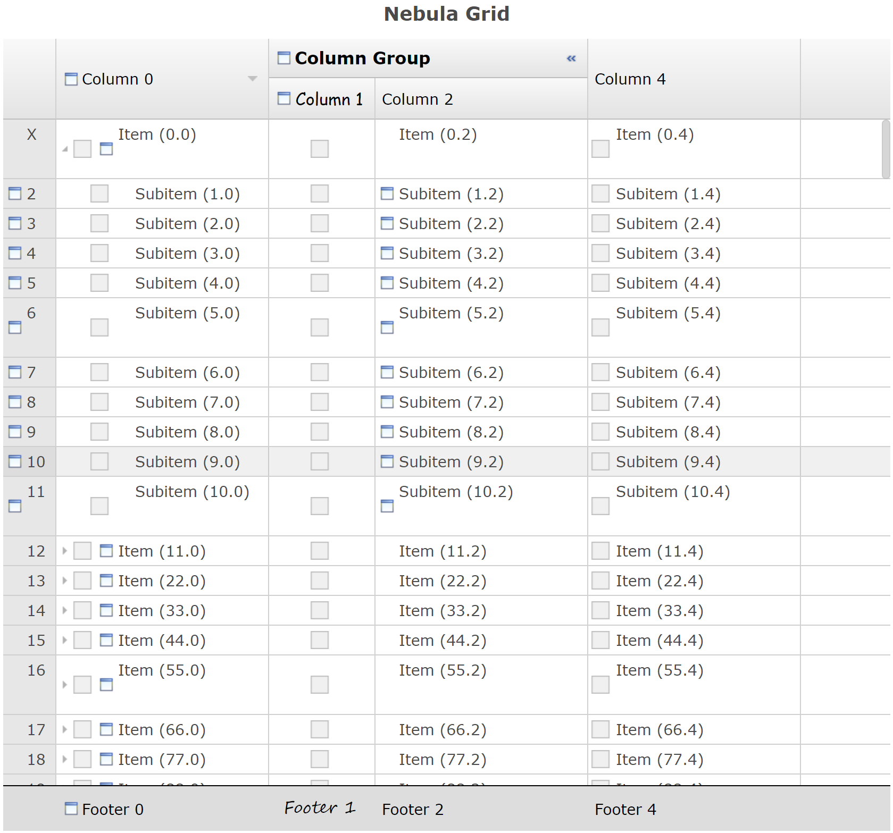

Although there is no direct change in the RAP runtime to use Java 11, this requirement is now enforced by the Eclipse Platform.
Servlet 2.5 API is from 2005, Servlet 3.0 API from 2009. All modern servlet containers are using at least Servlet 3.1. With this change the OSGi bundle version will always match the servlet specification version.
In this release we added the possibility to configure and show row headers in Nebula Grid.

The following public methods have been added:
org.eclipse.nebula.widgets.grid.Grid
setRowHeaderVisible(boolean)setRowHeaderVisible(boolean, int)setItemHeaderWidth(int)getItemHeaderWidth()isRowHeaderVisible()setWordWrapHeader(boolean)isWordWrapHeader()org.eclipse.nebula.widgets.grid.GridItem
setHeaderText(String)getHeaderText()setHeaderImage(Image)getHeaderImage()setHeaderBackground(Color)getHeaderBackground()setHeaderForeground(Color)getHeaderForeground()setHeaderFont(Font)getHeaderFont()
Clipboard (read/write) support is now available for browsers based on Chromium - Chrome, Opera,
Edge. There is limited support for Firefox (write only). Currently it is only possible to
transfer plain text data. The implementation is using the same synchronous SWT
org.eclipse.swt.dnd.Clipboard API, which is not supported when you run the
application in JEE_COMPATIBILITY mode.